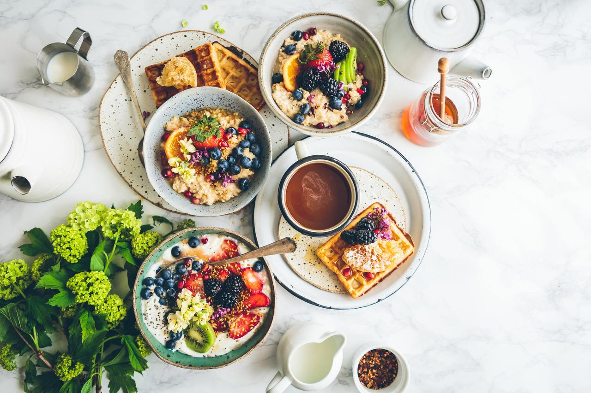
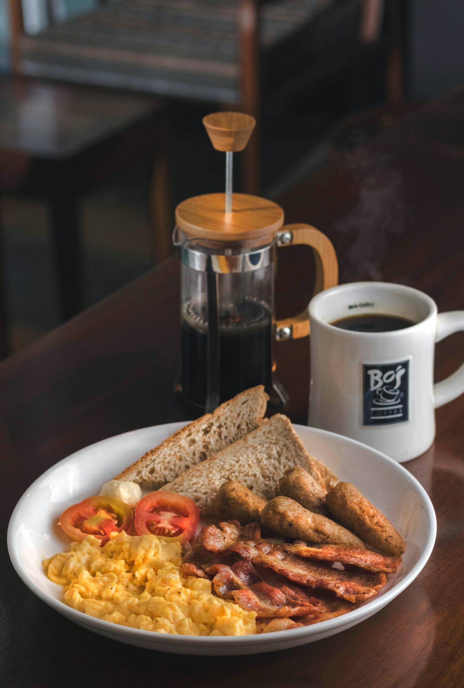

Nhịn ăn gián đoạn¶
Nguồn bài viết
Bỏ Bữa Sáng Có Thực Sự Tệ Cho Sức Khỏe Và Nhịn Ăn Gián Đoạn (Intermittent Fasting) Là Gì
Tình hình là sau gần nửa năm nằm nhà ăn và ngủ vì dịch covid khiến mình mập như con lợn cạo nên phải lộn vài vòng trên mạng tìm cách giảm cân. Tản mạn một chút thì mình có được biết đến phương pháp Nhịn ăn gián đoạn (Intermittent Fasting), đọc một lượt thì có vẻ hay ho vì nhịn ăn thì vừa đỡ tốn tiền chi tiêu vặt, vừa đỡ cất công suy nghĩ "hôm nay em muốn ăn gì?". Nhưng mình bỗng giật mình nghi ngờ về ảnh hưởng sức khỏe của phương pháp này, vì mình đơn giản là một người tự xưng là sống healthy (thực tế thì không), không có chuyện bỏ bữa, nhất là bữa sáng, nếu không thì mình sẽ "thiếu mão lên não, gây đau đầu chóng mặt, hoa mắt, ù tai, suy giảm trí nhớ, mất ngủ, đêm trằn trọc, ngày ngủ gà ngủ gật.."
Nhưng mà mình quan sát ở một số bạn khác thì không như thế?
Vậy chuyện bỏ bữa, cụ thể là bữa sáng, có thực sự tệ cho sức khỏe như mọi người thường nói hay không? Và chế độ ăn IF có thực sự hiệu quả không? Mời mọi người cùng đọc và thảo luận.
Nhịn ăn gián đoạn (IF) là gì?¶
IF là một chế độ ăn uống có chu kỳ giữa thời gian nhịn ăn (fasting) và ăn (eating) khác với kiểu truyền thống. Ở chế độ ăn này thì ngoài việc quan tâm bạn ăn gì, nạp gì vào cơ thể; nó cũng yêu cầu tới việc nên ăn vào khoảng thời gian nào và khoảng thời gian nào thì không. IF phổ biến là nhịn ăn (fasting) 16 tiếng mỗi ngày và 2 ngày hoàn toàn không ăn gì cho mỗi tuần.
Phương pháp này dựa trên cơ sở tiến hóa của tổ tiên chúng ta. Với việc đương nhiên không có siêu thị và tủ lạnh để dự trữ đồ ăn (và một lon bia ướp lạnh), có khi thi thoảng còn không săn bắt được gì thì chuyện nhịn đói là xảy ra thường xuyên. Cơ chế tiến hóa giúp con người duy trì hoạt động mà không cần thức ăn trong một khoảng thời gian dài.
Thực tế thì fasting vẫn hay thường được áp dụng ở nhiều tôn giáo như Hồi giáo, Kitô giáo, Do Thái giáo và Phật giáo cho các hoạt động tâm linh.
Những năm gần đây, IF nổi lên như là một xu hướng sức khỏe, người ta bắt đầu dùng nó để giảm cân, cải thiện sức khỏe và đơn giản lối sống (và đỡ phải hỏi nhau nay ăn gì).
Nhiều nghiên cứu chỉ ra rằng IF có nhiều tác động tích cực tới não bộ và cơ thể, giúp con người sống lâu hơn. [1] [2]
Các phương pháp IF¶
Có nhiều phương pháp IF, nhưng nhìn chung vẫn là chia khoảng thời gian nhịn ăn (fasting) và thời gian để ăn (eating).
Trong thời gian fasting, bạn không được ăn gì hoặc chỉ ăn rất ít.
Có 3 chế độ IF phổ biến:
- 16/8: bao gồm việc bỏ bữa sáng, và chỉ được ăn trong vòng 8 tiếng, thường là từ 1h trưa đến 9h tối. Sau đó fasting 16 tiếng.
- Eat-Stop-Eat: đơn giản là chọn ra 1 hoặc 2 ngày trong tuần để nhịn ăn hoàn toàn.
- Chế độ 5:2: chỉ nạp vào 500-600 calories vào 2 ngày không liên tiếp nhau, 5 ngày còn lại ăn bình thường.

Bỏ bữa sáng có tệ như lời đồn?¶
"Bữa sáng là bữa quan trọng nhất trong ngày!" - Câu huyền thoại của mẹ mình.
Từ trước tới nay, bữa sáng luôn được cho là một bữa ăn quan trọng cho sức khỏe, thậm chí quan trọng hơn cả những bữa khác trong ngày. Nhiều chế độ ăn chính thức khuyến nghị là nên dùng bữa sáng.
Dùng bữa sáng được cho là giúp chúng ta giảm cân, và việc bỏ đi bữa ăn này làm tăng nguyên cơ béo phì.
Có lẽ đây là vấn đề thực sự vì 25% người Mỹ thường xuyên bỏ bữa sáng [3] và họ có tới 39.8% người trên 20 tuổi mắc bệnh béo phì [4].
Đúng là những người có thói quen ăn sáng có xu hướng sống lành mạnh hơn, họ ít có xu hướng quá cân/ béo phì và ít nguy cơ mắc một số bệnh mãn tính [5] [6] [7]. Vì lý do này, nhiều chuyên gia cho rằng bữa sáng thì tốt cho chúng ta.
Tuy nhiên, đây chỉ là những nghiên cứu quan sát (observational studies), điều này không thể chứng minh sự liên hệ. Các nghiên cứu này chỉ chỉ ra những người thường ăn sáng thì sống khỏe mạnh hơn, nhưng chúng không chứng minh là bản thân của việc dùng bữa sáng dẫn tới điều này.
Ví dụ như sau, những người ăn sáng có xu hướng có một chế độ ăn khỏe mạnh, với nhiều chất xơ và vi chất dinh dưỡng hơn. [8] [9]
Mặt khác, những người có xu hướng bỏ bữa sáng có xu hướng thường xuyên hút thuốc, uống rượu và ít tập thể dục hơn. [10]
Bên cạnh đó, việc dùng bữa sáng cũng không làm tăng khả năng trao đổi chất [11] và giúp giảm cân [12] như lời đồn.
Vậy thì đã rõ, không có gì "đặc biệt" về bữa sáng cả. Dùng bữa sáng hay không là tùy vào thói quen của bạn. Nếu bạn tự tin là một người sống lành mạnh, tập thể dục đều đặn thì việc bỏ bữa sáng không có ảnh hưởng xấu tới sức khỏe đâu nhé.

Bye bữa sáng ༼ つ ಥ_ಥ ༽つ
Lợi ích sức khỏe của IF¶
Nhiều nghiên cứu về chế độ IF đã được thực hiện trên lẫn động vật và người, chúng chỉ ra rằng chế độ này có rất nhiều tác động tích cực tới não và cơ thể, thậm chí nó có thể giúp bạn sống lâu hơn.
Dưới đây là một vài ví dụ của IF:
-
Kháng insulin: IF có thể giảm kháng insulin, hạ thấp đường huyết máu 3-6% và nồng độ insulin khi fasting 20-31%, điều này giúp chống lại nguy cơ bệnh tiểu đường loại 2. [15]
-
Chống viêm: một vài nghiên cứu cho thấy có tác dụng giảm viêm, yếu tố dẫn đến nhiều bệnh mãn tính. [16] [17] [18]
-
Sức khỏe tim mạch: IF có thể giảm LDL cholesterol "xấu", mỡ máu, viêm, đường huyết, kháng insulin - tất cả các tác nhân dẫn đến bệnh tim [13] [19][20].
-
Ung thư: nghiên cứu trên động vật chỉ ra IF có thể ngăn chặn ung thư [21] [22] [23] [24].
-
Sức khỏe não bộ: IF tăng cường hormone BDNF và có thể hỗ trợ sự phát triển của các tế bào thần kinh mới. Nó cũng đồng thời có thể ngăn chặn bệnh Alzheimer. [25] [26] [27]
-
Chống lão hóa: IF kéo dài tuổi đời ở chuột. Nghiên cứu chỉ ra chuột sống thêm 36-83% thời gian. [28] [29]
Tuy nhiên những nghiên cứu chỉ mới trong giai đoạn đầu, nhiều nghiên cứu phạm vi còn hẹp, thời gian thực hiện ngắn và tiến hành trên động vật. Vẫn còn nhiều câu hỏi chưa được trả lời ở các nghiên cứu lớn hơn. [32].
Ngoài yếu tố sức khỏe thì IF còn được phổ biến rộng rãi gần đây do đơn giản lối sống hơn, và vẫn đương nhiên là bớt phải hỏi nhau hôm nay ăn gì? :v
Những ai nên cẩn thận và nên tránh IF¶
IF chắc chắn không dành cho tất cả mọi người. Nếu bạn thiếu cân tong teo hoặc có tiền sử rối loạn ăn uống, thì bạn không nên nhịn ăn mà không hỏi ý kiến chuyên gia y tế trước. Trong những trường hợp này, nó có thể hết sức có hại.
Phụ nữ có nên fasting không?¶
Có vài bằng chứng cho thấy phụ nữ khi IF thì không hoàn toàn hưởng lợi như cánh mày râu.
Một nghiên cứu cho thấy IF cải thiện insulin ở nam nhưng làm giảm đi sự kiểm soát đường huyết ở nữ [33]. Mặc dù các nghiên cứu về vấn đề này ở con người chưa có, nhưng những nghiên cứu khác tìm ra IF làm chuột cái hốc hác, đực hóa, vô sinh và mất kinh nguyệt. [34] [35]
Cũng có một báo cáo chưa đáng tin về những phụ nữ mất kinh nguyệt khi thực hiện IF và hành kinh bình thường trở lại khi họ quay lại chế độ ăn trước đó.
Vì những lí do này, các bạn nữ nên cẩn thận với IF, hãy dừng lại khi thấy những dấu hiệu bất thường như việc mất kinh. Nếu bạn có vấn đề với khả năng sinh sản và/ hoặc đang cố gắng thụ thai, hãy cân nhắc kỹ IF. Kiểu ăn uống này có thể là một ý tưởng tệ nếu bạn đang mang thai hoặc cho con bú.
**
Bữa sáng cho sinh viên :3
Độ an toàn và tác dụng phụ¶
Khỏi phải nói là chắc chắn đói sẽ là tác dụng phụ đầu tiên của IF :v. Bạn cũng sẽ cảm thấy mệt mỏi và đầu của bạn sẽ không minh mẫn như chế độ ăn trước. Điều này có thể là tạm thời, và nó sẽ cần thời gian để điều đỉnh cơ thể theo lịch trình mới.
Nếu bạn có các vấn đề về sức khỏe, nên tham khảo ý kiến bác sĩ trước khi thử IF.
Đặc biệt là những bệnh sau:
-
Bệnh tiểu đường.
-
Có vấn đề với điều hòa đường huyết.
-
Huyết áp thấp
-
Đang chữa trị
-
Thiếu cân
-
Có tiền sử rối loạn tiêu hóa.
-
Là phụ nữ và đang muốn thử IF.
-
Là phụ nữ có tiền sử bệnh kinh nguyệt
-
Đang mang thai và cho con bú.
Kết¶
Như những gì đã nêu trên, IF được nhiều nghiên cứu chứng minh là an toàn và có lợi cho sức khỏe. Không có gì nguy hiểm khi không ăn trong một thời gian nếu bạn khỏe mạnh và được nuôi dưỡng tốt.
Hiện tại thì mình chưa áp dụng vì có tiền sử đau dạ dày, bạn nào đã áp dụng IF thì rất hoan nghênh chia sẻ kinh nghiệm bên dưới nhé.
Levi - 15/07/2020.